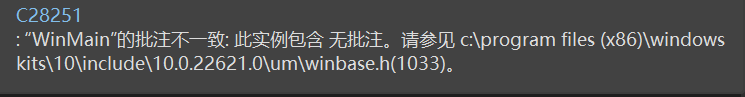
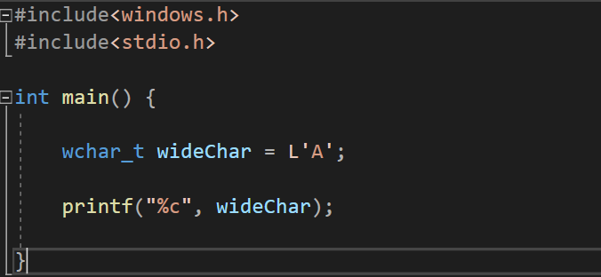

摸鱼ing（1） Windows API 程序设计初探（1）
Windows API 编程初探1
写在前面：这是本菜鸟首次对一个大的topic有巨大的兴趣，正好，本人对桌面应用开发有动力研究，这里就以Windows API 编程作为自己串起来操作系统，并发编程，C++基本程序设计应用，以及底层QT开发的一个Application demo了！
前导
还记得你在实验课上使用老古董 VS2010，当你选择了空项目开发后必须手动使用
system("pause"); 这个函数嘛？不错，他就是我们Windows API的一个。目的是让程序暂停在此句！我们应用的头文件是：
#include<Windows.h> 我们的主角来了哈哈哈
小试一手
创建你的一个项目，不够今天，我们创建的是一个桌面向导项目，随后，我们选择空项目创建，将：

改成：

以及转到：（右键项目选择属性）
把控制台改成窗口输出！不然编译器会在下面的程序中报错！

我们书写一个简单的C++程序！
#include<Windows.h>
int WINAPI WinMain(HINSTANCE hInstance, HINSTANCE hPrevInstance, LPSTR ipCmdLine, int nCmdShow)
{
MessageBox(NULL, TEXT("Hello, World"), TEXT("Captions"), MB_OKCANCEL | MB_ICONINFORMATION | MB_DEFBUTTON2);
return 0;
} F5一下：

6！
逐一解释
#include< Windows.h >
我们老规矩，先来看看Windows.h装了啥：

反正一大堆，但是核心就这些，这是我们需要注意的！
int WINAPI WinMain(HINSTANCE hInstance, HINSTANCE hPrevInstance, LPSTR ipCmdLine, int nCmdShow)
一个函数！有些人奇怪了，什么玩意？C++程序没有int main(), 就像西方没有耶路撒冷一样！不是的！
在Windows桌面开发下，他就是我们的main函数。在Microsoft API Platform SDK下，我们查阅到：
int WINAPI WinMain(
HINSTANCE hInstance,
// handle to current instance
HINSTANCE hPrevInstance,
// handle to previous instance
LPSTR lpCmdLine,
// command line
int nCmdShow
// show stat
)
What is WINAPI
光标移动到上面： __stdcall 这是啥呢？标准调用！
被这个关键字修饰的函数，其参数都是从右向左通过堆栈传递的(__fastcall 的前面部分由ecx,edx传)， 函数调用在返回前要由被调用者清理堆栈。
啥？你不相信？反汇编我们产生的EXE文件就OK了：在MessageW处打一个断点，运行之找到

大多数电脑采用的是大端法，也就是说可以理解为：参数在右边的，先被推送进函数里去
批注？

什么是批注呢请看我们函数和头文件下的：
看看_ In _这个宏，他就是一个说明参数性质的宏！
// from sal.h
_In_ : input parameter to a function, unmodified by called function
_Out_ : output parameter, written to by called function, pointed-to
location not expected to be initialized prior to call
_Outptr_ : like _Out_ when returned variable is a pointer type
(so param is pointer-to-pointer type). Called function
provides/allocated space.
_Outref_ : like _Outptr_, except param is reference-to-pointer type.
_Inout_ : inout parameter, read from and potentially modified by
called function.
_Ret_ : for return values
_Field_ : class/struct field invariants In 表明他是一个输入参数，有点像const 一样，函数读取值但是不可以修改它！
InOut就是表示这是一个这样的值：传入又传出，值会被修改
Out表示这个值会被这个函数设置
OutPtr 表示返回这个值的指针
Microsoft对参数合理性做出了更多的解释：类似于main函数一样
[in] hInstance
类型： HINSTANCE
应用程序的当前实例的句柄。
[in] hPrevInstance
类型： HINSTANCE
应用程序的上一个实例的句柄。 此参数始终为 NULL。 如果需要检测另一个实例是否已存在，请使用 CreateMutex 函数创建唯一命名的互斥体。 即使互斥体已存在，CreateMutex 也会成功，但函数将返回ERROR_ALREADY_EXISTS。 这表示应用程序的另一个实例存在，因为它首先创建了互斥体。 但是，恶意用户可以在执行之前创建此互斥体，并阻止应用程序启动。 为防止这种情况，请创建一个随机命名的互斥体并存储名称，以便它只能由授权用户获取。 或者，可以使用文件进行此目的。 若要将应用程序限制为每个用户的一个实例，请在用户配置文件目录中创建锁定的文件。
[in] lpCmdLine
类型： LPSTR
应用程序的命令行，不包括程序名称。 若要检索整个命令行，请使用 GetCommandLine 函数。
[in] nShowCmd
类型： int
控制窗口的显示方式。 此参数可以是可在 ShowWindow 函数的 nCmdShow 参数中指定的任何值。显示一个模式对话框，其中包含系统图标、一组按钮和一条简短的应用程序特定消息，例如状态或错误信息。 消息框返回一个整数值，该值指示用户单击的按钮。
MessageBox函数
语法
int MessageBox(
[in, optional] HWND hWnd,
[in, optional] LPCTSTR lpText,
[in, optional] LPCTSTR lpCaption,
[in] UINT uType
);参数
[in, optional] hWnd类型：HWND
要创建的消息框的所有者窗口的句柄。 如果此参数为 NULL，则消息框没有所有者窗口。
[in, optional] lpText类型： LPCTSTR
要显示的消息。 如果字符串包含多个行，则可以使用回车符和/或换行符分隔每行之间的行。
[in, optional] lpCaption类型： LPCTSTR
对话框标题。 如果此参数为 NULL，则默认标题为 Error。
[in] uType类型： UINT
对话框的内容和行为。 此参数可以是以下标志组中的标志的组合。
若要指示消息框中显示的按钮，请指定以下值之一。
| Value | 含义 |
|---|---|
| MB_ABORTRETRYIGNORE0x00000002L | 消息框包含三个推送按钮： 中止、 重试和 忽略。 |
| MB_CANCELTRYCONTINUE0x00000006L | 消息框包含三个按下按钮： “取消”、“ 重试”、“ 继续”。 使用此消息框类型，而不是MB_ABORTRETRYIGNORE。 |
| MB_HELP0x00004000L | 向消息框添加 “帮助 ”按钮。 当用户单击 “帮助 ”按钮或按 F1 时，系统会向所有者发送 WM_HELP 消息。 |
| MB_OK0x00000000L | 消息框包含一个按钮： 确定。 这是默认值。 |
| MB_OKCANCEL0x00000001L | 消息框包含两个推送按钮： “确定 ”和 “取消”。 |
| MB_RETRYCANCEL0x00000005L | 消息框包含两个按下按钮： 重试 和 取消。 |
| MB_YESNO0x00000004L | 消息框包含两个按下按钮： 是 和 否。 |
| MB_YESNOCANCEL0x00000003L | 消息框包含三个按钮： 是、 否和 取消。 |
若要在消息框中显示图标，请指定以下值之一。
| Value | 含义 |
|---|---|
| MB_ICONEXCLAMATION0x00000030L | 消息框中会显示一个感叹号图标。 |
| MB_ICONWARNING0x00000030L | 消息框中会显示一个感叹号图标。 |
| MB_ICONINFORMATION0x00000040L | 图标由圆圈中的小写字母 i 组成，显示在消息框中。 |
| MB_ICONASTERISK0x00000040L | 图标由圆圈中的小写字母 i 组成，显示在消息框中。 |
| MB_ICONQUESTION0x00000020L | 消息框中会显示一个问号图标。 不再建议使用问号消息图标，因为这种图标无法清楚地表示特定类型的消息，并且作为问题的消息表述可应用于任何消息类型。 此外，用户可能会将问号消息符号与帮助信息混淆。 因此，不要在消息框中使用问号消息符号。 系统继续支持它包含的内容，只为满足反向兼容性。 |
| MB_ICONSTOP0x00000010L | 消息框中会显示一个停止符号图标。 |
| MB_ICONERROR0x00000010L | 消息框中会显示一个停止符号图标。 |
| MB_ICONHAND0x00000010L | 消息框中会显示一个停止符号图标。 |
若要指示默认按钮，请指定以下值之一。
| Value | 含义 |
|---|---|
| MB_DEFBUTTON10x00000000L | 第一个按钮是默认按钮。除非指定了MB_DEFBUTTON2、MB_DEFBUTTON3或MB_DEFBUTTON4，否则MB_DEFBUTTON1是默认值。 |
| MB_DEFBUTTON20x00000100L | 第二个按钮是默认按钮。 |
| MB_DEFBUTTON30x00000200L | 第三个按钮是默认按钮。 |
| MB_DEFBUTTON40x00000300L | 第四个按钮是默认按钮。 |
若要指示对话框的形式，请指定以下值之一。
| Value | 含义 |
|---|---|
| MB_APPLMODAL0x00000000L | 在 hWnd 参数标识的窗口中继续工作之前，用户必须响应消息框。 但是，用户可以移动到其他线程的窗口，并在这些窗口中工作。根据应用程序中的窗口层次结构，用户可能能够移动到线程中的其他窗口。 消息框父级的所有子窗口都将自动禁用，但弹出窗口不是。如果未指定MB_SYSTEMMODAL或MB_TASKMODAL，则MB_APPLMODAL为默认值。 |
| MB_SYSTEMMODAL0x00001000L | 与MB_APPLMODAL相同，消息框具有 WS_EX_TOPMOST 样式。 使用系统模式消息框通知用户严重、潜在的破坏性错误，例如， (立即引起注意，) 内存不足。 此标志不会影响用户与 与 hWnd 关联的窗口以外的窗口交互的能力。 |
| MB_TASKMODAL0x00002000L | 与 MB_APPLMODAL 相同，如果 hWnd 参数为 NULL，则禁用属于当前线程的所有顶级窗口。 当调用应用程序或库没有可用的窗口句柄时，请使用此标志，但仍需要防止输入到调用线程中的其他窗口，而不会挂起其他线程。 |
若要指定其他选项，请使用以下一个或多个值。
| Value | 含义 |
|---|---|
| MB_DEFAULT_DESKTOP_ONLY0x00020000L | 与交互式窗口工作站的桌面相同。 有关详细信息，请参阅 窗口工作站。如果当前输入桌面不是默认桌面，则在用户切换到默认桌面之前， MessageBox 不会返回。 |
| MB_RIGHT0x00080000L | 文本是右对齐的。 |
| MB_RTLREADING0x00100000L | 在希伯来语和阿拉伯语系统上使用从右到左阅读顺序显示消息和标题文本。 |
| MB_SETFOREGROUND0x00010000L | 消息框将成为前台窗口。 在内部，系统调用消息框的 SetForegroundWindow 函数。 |
| MB_TOPMOST0x00040000L | 消息框是使用 WS_EX_TOPMOST 窗口样式创建的。 |
| MB_SERVICE_NOTIFICATION0x00200000L | 调用方是通知用户某个事件的服务。 该函数在当前活动桌面上显示一个消息框，即使没有用户登录到计算机也是如此。终端服务： 如果调用线程具有模拟令牌，该函数会将消息框定向到模拟令牌中指定的会话。如果设置了此标志， 则 hWnd 参数必须为 NULL。 这样，消息框可以出现在桌面上，而不是与 hWnd 对应的桌面。有关使用此标志的安全注意事项的信息，请参阅 Interactive Services。 具体而言，请注意，此标志可以在锁定的桌面上生成交互式内容，因此应仅用于一组非常有限的方案，例如资源耗尽。 |
返回值
类型： int
如果消息框有 “取消 ”按钮，则函数返回 IDCANCEL 值（如果按下 ESC 键或选中 “取消 ”按钮）。 如果消息框没有 “取消 ”按钮，则按 ESC 将不起作用 -除非存在MB_OK按钮。 如果显示MB_OK按钮，并且用户按 ESC，则返回值为 IDOK。
如果函数失败，则返回值为零。 要获得更多的错误信息，请调用 GetLastError。
如果函数成功，则返回值为以下菜单项值之一。
| 返回代码/值 | 说明 |
|---|---|
| IDABORT3 | 已选择 “中止 ”按钮。 |
| IDCANCEL2 | 已选择“ 取消 ”按钮。 |
| IDCONTINUE11 | 已选择 “继续 ”按钮。 |
| IDIGNORE5 | 已选择 “忽略 ”按钮。 |
| IDNO7 | 已选择 “无 ”按钮。 |
| IDOK1 | 已选择 “确定 ”按钮。 |
| IDRETRY4 | 已选择 “重试 ”按钮。 |
| IDTRYAGAIN10 | 已选择 “重试 ”按钮。 |
| IDYES6 | 已选择 “是 ”按钮。 |
注解
通过将 uType 参数设置为相应的标志值，可以在消息框中使用以下系统图标。
| 图标 | 标志值 |
|---|---|
 |
MB_ICONHAND、 MB_ICONSTOP或 MB_ICONERROR |
 |
MB_ICONQUESTION |
 |
MB_ICONEXCLAMATION 或 MB_ICONWARNING |
| MB_ICONASTERISK 或 MB_ICONINFORMATION |
在 MessageBox 显示字符串开头的 Unicode 格式字符 U+200F 表示 (RL) M 添加两个从右到左标记，以便使 MessageBox 的读取顺序呈现为从右到左 (RTL) 。
使用系统模式消息框指示系统内存不足时， lpText 和 lpCaption 参数指向的字符串不应从资源文件中获取，因为尝试加载资源可能会失败。
如果在对话框存在时创建消息框，请使用对话框的句柄作为 hWnd 参数。 hWnd 参数不应标识子窗口，如对话框中的控件。
示例
在以下示例中，应用程序显示一个消息框，该消息框在出现错误条件后提示用户执行操作。 消息框显示描述错误条件以及如何解决错误条件的消息。 MB_CANCELTRYCONTINUE样式指示 MessageBox 提供三个按钮，用户可以选择如何继续操作。 MB_DEFBUTTON2样式将默认焦点设置为消息框的第二个按钮，在本例中为“重试”按钮。
#include<Windows.h>
void WINAPI doSomethingHalt() {
int usrChoice = MessageBox(NULL, TEXT("Are you sure to move forward? That is supposed to be invalid... I convinced!")\
,TEXT("Warning"),MB_ICONWARNING|MB_CANCELTRYCONTINUE|MB_DEFBUTTON2);
switch (usrChoice)
{
case IDCANCEL:
MessageBox(NULL, TEXT("good"), TEXT("afterWard"), MB_OKCANCEL | MB_ICONINFORMATION | MB_DEFBUTTON2);
break;
case IDRETRY:
MessageBox(NULL, TEXT("I mean: that is not good!"), TEXT("afterWard"), MB_OKCANCEL | MB_ICONINFORMATION | MB_DEFBUTTON2);
break;
case IDCONTINUE:
MessageBox(NULL, TEXT("I mean: that is not good!"), TEXT("afterWard"), MB_OKCANCEL | MB_ICONINFORMATION | MB_DEFBUTTON2);
break;
default:
break;
}
return;
}
int WINAPI WinMain(HINSTANCE hInstance, HINSTANCE hPrevInstance, LPSTR ipCmdLine, int nCmdShow)
{
//MessageBox(NULL, TEXT("Hello, World"), TEXT("Captions"), MB_OKCANCEL | MB_ICONINFORMATION | MB_DEFBUTTON2);
doSomethingHalt();
return 0;
}
// design by CharlieChen字符串主题
入门
下面我们开始入门简单的字符串主题：啥意思呢？回顾我们C语言的API。我们是如下声明一个char类型或基于char类型的数组
char typicalChar = 'A';
char* TCPtr = "Hello!My friend~";
char arrayCPtr = "hello,my frined~"; 我们马上可以看到，char是一份字节大小，那么下面的arrayCPtr就指明需要17个字节来存储。
wchar_t类型
可是，仅仅使用char可能存储不下如今丰富的字符。所以，转向扩展char是必要的，wchar,也就是widechar应运而生。在Windows 2000之后所有的Windows系统都在底层上支持Unicode字符集。
我们这样声明与初始化一个wchar变量：
wchar_t wideChar = L'A'
类似的：
wchar* ptrW = "Hello";
wchar ptr[7] = "Hello!"; 但是注意：如果我们还是选择
printf("%s", ptrW);
printf("%s", ptr); 则只会打印首元素，这是因为字符串类型不匹配，人话讲就是：wchar字符串不用%s打印，而是ls
printf("%ls", ptrW);
printf("%ls", ptr); 或者是
wchar_t* WPTR = {'a','\0'};
wprintf("%s",WPTR); 或是直接调用setlocal函数做默认的设置！
#include <stdio.h>
#include <string.h>
#include <locale.h>
int main()
{
//使用系统默认的设置调用setlocale(LC_ALL, "");
setlocale(LC_ALL, "");
const wchar_t * chWord = L"疯狂程序人—码农哈哥";
printf("%s",chWord);
}Windows下的字符和宽字符
Windows整理自己的活：他们定义了他们自己的字符类型：在winnt.h文件下可以找到：
//
// Basics
//
#ifndef VOID
#define VOID void
typedef char CHAR;
typedef short SHORT;
typedef long LONG;
#if !defined(MIDL_PASS)
typedef int INT;
#endif
#endif
//
// UNICODE (Wide Character) types
//
#ifndef _MAC
typedef wchar_t WCHAR; // wc, 16-bit UNICODE character
#else
// some Macintosh compilers don't define wchar_t in a convenient location, or define it as a char
typedef unsigned short WCHAR; // wc, 16-bit UNICODE character
#endif
typedef WCHAR *PWCHAR, *LPWCH, *PWCH;
typedef CONST WCHAR *LPCWCH, *PCWCH;
typedef _Null_terminated_ WCHAR *NWPSTR, *LPWSTR, *PWSTR;
typedef _Null_terminated_ PWSTR *PZPWSTR;
typedef _Null_terminated_ CONST PWSTR *PCZPWSTR;
typedef _Null_terminated_ WCHAR UNALIGNED *LPUWSTR, *PUWSTR;
typedef _Null_terminated_ CONST WCHAR *LPCWSTR, *PCWSTR;
typedef _Null_terminated_ PCWSTR *PZPCWSTR;
typedef _Null_terminated_ CONST PCWSTR *PCZPCWSTR;
typedef _Null_terminated_ CONST WCHAR UNALIGNED *LPCUWSTR, *PCUWSTR;
typedef _NullNull_terminated_ WCHAR *PZZWSTR;
typedef _NullNull_terminated_ CONST WCHAR *PCZZWSTR;
typedef _NullNull_terminated_ WCHAR UNALIGNED *PUZZWSTR;
typedef _NullNull_terminated_ CONST WCHAR UNALIGNED *PCUZZWSTR;
typedef WCHAR *PNZWCH;
typedef CONST WCHAR *PCNZWCH;
typedef WCHAR UNALIGNED *PUNZWCH;
typedef CONST WCHAR UNALIGNED *PCUNZWCH;
#if _WIN32_WINNT >= 0x0600 || (defined(__cplusplus) && defined(WINDOWS_ENABLE_CPLUSPLUS))
typedef CONST WCHAR *LPCWCHAR, *PCWCHAR;
typedef CONST WCHAR UNALIGNED *LPCUWCHAR, *PCUWCHAR;
//
// UCS (Universal Character Set) types
//
typedef unsigned long UCSCHAR;
//
// Even pre-Unicode agreement, UCS values are always in the
// range U+00000000 to U+7FFFFFFF, so we'll pick an obvious
// value.
#define UCSCHAR_INVALID_CHARACTER (0xffffffff)
#define MIN_UCSCHAR (0)
//
// We'll assume here that the ISO-10646 / Unicode agreement
// not to assign code points after U+0010FFFF holds so that
// we do not have to have separate "UCSCHAR" and "UNICODECHAR"
// types.
//
#define MAX_UCSCHAR (0x0010FFFF)
typedef UCSCHAR *PUCSCHAR;
typedef const UCSCHAR *PCUCSCHAR;
typedef UCSCHAR *PUCSSTR;
typedef UCSCHAR UNALIGNED *PUUCSSTR;
typedef const UCSCHAR *PCUCSSTR;
typedef const UCSCHAR UNALIGNED *PCUUCSSTR;
typedef UCSCHAR UNALIGNED *PUUCSCHAR;
typedef const UCSCHAR UNALIGNED *PCUUCSCHAR;
#endif // _WIN32_WINNT >= 0x0600
//
// ANSI (Multi-byte Character) types
//
typedef CHAR *PCHAR, *LPCH, *PCH;
typedef CONST CHAR *LPCCH, *PCCH;
typedef _Null_terminated_ CHAR *NPSTR, *LPSTR, *PSTR;
typedef _Null_terminated_ PSTR *PZPSTR;
typedef _Null_terminated_ CONST PSTR *PCZPSTR;
typedef _Null_terminated_ CONST CHAR *LPCSTR, *PCSTR;
typedef _Null_terminated_ PCSTR *PZPCSTR;
typedef _Null_terminated_ CONST PCSTR *PCZPCSTR;
typedef _NullNull_terminated_ CHAR *PZZSTR;
typedef _NullNull_terminated_ CONST CHAR *PCZZSTR;
typedef CHAR *PNZCH;
typedef CONST CHAR *PCNZCH;
//
// Neutral ANSI/UNICODE types and macros
//
#ifdef UNICODE // r_winnt
#ifndef _TCHAR_DEFINED
typedef WCHAR TCHAR, *PTCHAR;
typedef WCHAR TBYTE , *PTBYTE ;
#define _TCHAR_DEFINED
#endif /* !_TCHAR_DEFINED */
typedef LPWCH LPTCH, PTCH;
typedef LPCWCH LPCTCH, PCTCH;
typedef LPWSTR PTSTR, LPTSTR;
typedef LPCWSTR PCTSTR, LPCTSTR;
typedef LPUWSTR PUTSTR, LPUTSTR;
typedef LPCUWSTR PCUTSTR, LPCUTSTR;
typedef LPWSTR LP;
typedef PZZWSTR PZZTSTR;
typedef PCZZWSTR PCZZTSTR;
typedef PUZZWSTR PUZZTSTR;
typedef PCUZZWSTR PCUZZTSTR;
typedef PZPWSTR PZPTSTR;
typedef PNZWCH PNZTCH;
typedef PCNZWCH PCNZTCH;
typedef PUNZWCH PUNZTCH;
typedef PCUNZWCH PCUNZTCH;
#define __TEXT(quote) L##quote // r_winnt
#else /* UNICODE */ // r_winnt
#ifndef _TCHAR_DEFINED
typedef char TCHAR, *PTCHAR;
typedef unsigned char TBYTE , *PTBYTE ;
#define _TCHAR_DEFINED
#endif /* !_TCHAR_DEFINED */
typedef LPCH LPTCH, PTCH;
typedef LPCCH LPCTCH, PCTCH;
typedef LPSTR PTSTR, LPTSTR, PUTSTR, LPUTSTR;
typedef LPCSTR PCTSTR, LPCTSTR, PCUTSTR, LPCUTSTR;
typedef PZZSTR PZZTSTR, PUZZTSTR;
typedef PCZZSTR PCZZTSTR, PCUZZTSTR;
typedef PZPSTR PZPTSTR;
typedef PNZCH PNZTCH, PUNZTCH;
typedef PCNZCH PCNZTCH, PCUNZTCH;
#define __TEXT(quote) quote // r_winnt
#endif /* UNICODE */ // r_winnt
#define TEXT(quote) __TEXT(quote) // r_winnt
typedef SHORT *PSHORT;
typedef LONG *PLONG;
#define ALL_PROCESSOR_GROUPS 0xffff 在这里我们找到了两个东西：
#ifndef _MAC
typedef wchar_t WCHAR; // wc, 16-bit UNICODE character
#else
// some Macintosh compilers don't define wchar_t in a convenient location, or define it as a char
typedef unsigned short WCHAR; // wc, 16-bit UNICODE character
#endif 首先是wchar_t被重写位WCHAR。对于一些甚至没有wchar的编译器直接对unsigned short起别名。
其次是TEXT宏，这个宏便捷的帮助我们直接将普通的字符串升级为宽字符串，其做法不是强制转换，而是：
#define __TEXT(quote) L##quote
#define TEXT(quote) __TEXT(quote) ##是令牌粘贴，就是直接把L和字符串连接在一起返回，比若说：
TEXT("Hello")--- Compiler----> L"Hello" 我们看到，上面的定义给出了：PSTR和LPSTR的小东西。他们都是CHAR（本质上就是Char），而P C STR 和 LP C STR则是Const类型的字符串。也就是常字符串！
那对于TCHAR这样Windows自己给出了字符串，我们应该怎么处理呢了，答案是万能的WIndows又帮我们干好了。使用P T STR和LP T STR就可以胜任这些工作！
常见的字符串处理工作
获取字符串的长度
下面我们要说的是如何获取字符串的长度，请看strlen和wstrlen.
size_t strlen(const char* str);
size_t wstrlen(const wchar_t* str); size_t，如其所说的那样，衡量的是大小的类型。其定义查看建议自行搜索，这里做阐述。因为不是重点我想说的！
来试试看：
#include<Windows.h>
#include<stdio.h>
#include<tchar.h>
int main() {
CHAR str[] = "C语言\0"; // 这个函数返回占比字节的大小
WCHAR wstr[] = L"C语言"; // 这个函数返回的是宽字符的个数
_tprintf(TEXT("strlen(str) = %d\n wcslen(wstr) = %d"), strlen(str), wcslen(wstr));
} 
注意到_tprintf是一个随系统环境而改变的宏函数，在支持UNICODE字符集的情况下，系统将会自动的转化之成为wprintf！
类似的：我们还有一个叫做tcslen这个函数，他是这样被定义的：

好鸡肋啊，那如果我们改一下不支持Unicode子集呢？仍然是右键项目——属性，转到这个地方：

改成

发现变灰了！转向再看发现跳转到了：>